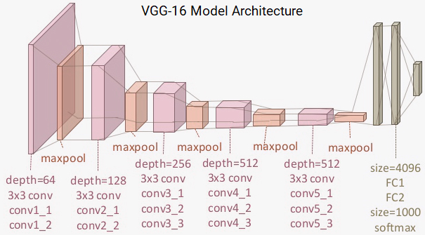
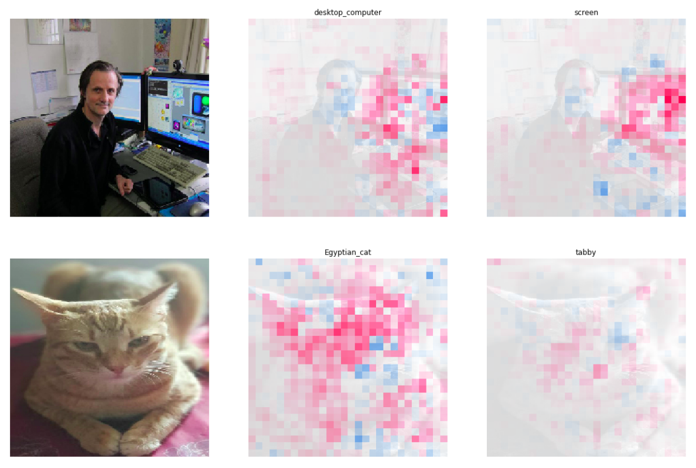
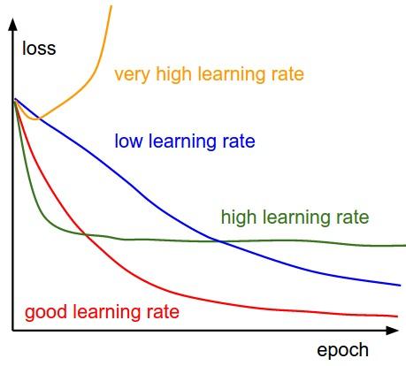
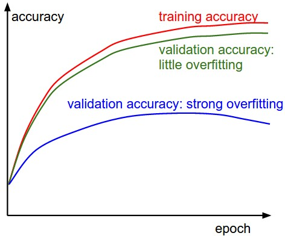
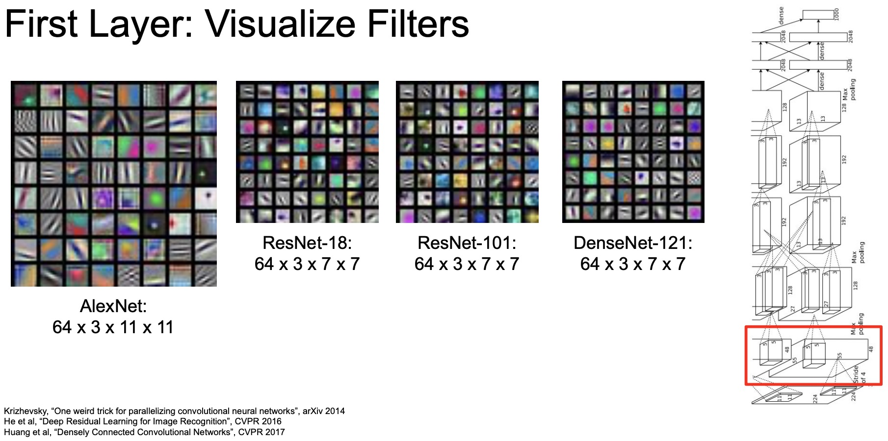
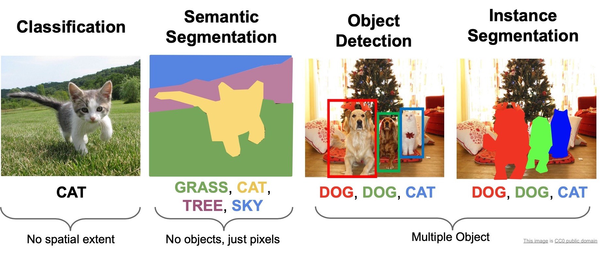
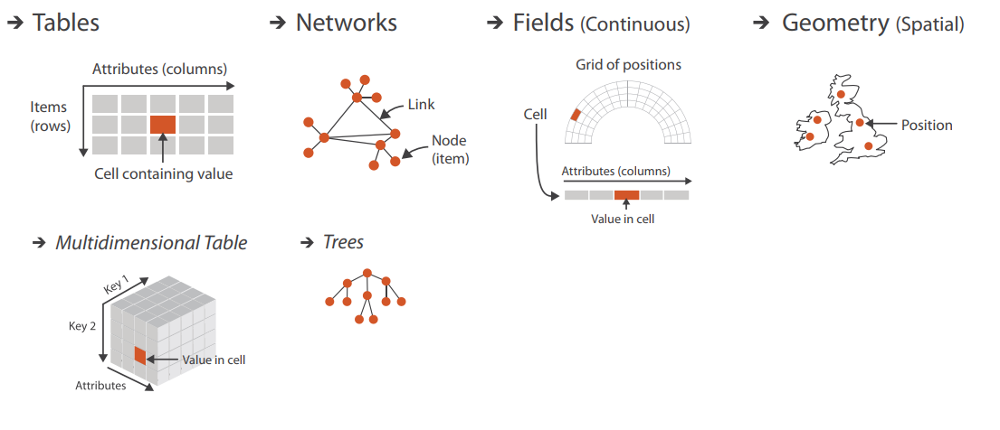
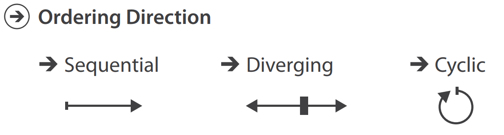
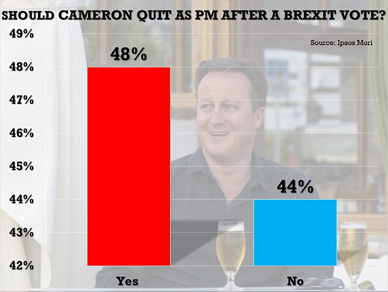
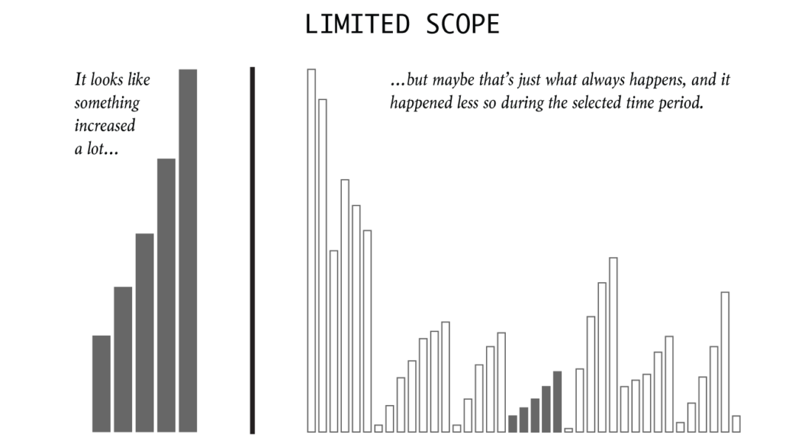

04 - Visualización de Datos
Visualización gráfica para IA
2026-02-24
¿Qué es la visualización de datos?
Es la representación visual de información para reforzar la cognición humana y facilitar el análisis y la comunicación.
Edward Tufte
Imagen de policyviz.com
Es el puente entre los datos y la comprensión, permitiendo transformar números en conocimiento accionable.
Ben Shneiderman
Imagen de dsi.udel.edu
Es el arte y la ciencia de hacer visible lo invisible, permitiendo a los humanos explorar y comprender información compleja. Andy Kirk
Imagen de animeshbajia.com
¿Para qué necesitamos la visualización de datos?
El sistema visual humano está altamente optimizado para la detección de patrones.
Ejemplo 1
¿Cuántos 3’s puedes encontrar?, ¿cuánto tiempo te tomó?
3 9 2 8 1 0 2 4 3
5 8 7 1 3 4 5 9 2
0 4 6 2 7 3 2 2 9
9 5 8 1 2 5 1 0 3
8 1 9 4 0 2 6 3 5
¿Cuántos 3’s puedes encontrar?, ¿cuánto tiempo te tomó?
3 9 2 8 1 0 2 4 3
5 8 7 1 3 4 5 9 2
0 4 6 2 7 3 2 2 9
9 5 8 1 2 5 1 0 3
8 1 9 4 0 2 6 3 5
¿Cuántos 3’s puedes encontrar?, ¿cuánto tiempo te tomó?
3 9 2 8 1 0 2 4 3
5 8 7 1 3 4 5 9 2
0 4 6 2 7 3 2 2 9
9 5 8 1 2 5 1 0 3
8 1 9 4 0 2 6 3 5
- Tenemos dificultades en la interpretación precisa de valores numéricos, pero podemos percibir cambios en color, forma y tamaño con facilidad.
Ejercicio
- ¿Qué información proporciona la tabla?
- ¿Qué nivel educativo tiene la mayor inscripción?
- ¿Se puede comparar fácilmente la inscripción en distintas ciudades entre el año 1 y el año 2?
- ¿Cómo haría para mostrar información acerca de estos datos?
| Ciudad | Preescolar Año 1 | Preescolar Año 2 | Primaria Año 1 | Primaria Año 2 | Secundaria Año 1 | Secundaria Año 2 | Mejora Preescolar Año 2 vs Año 1 |
|---|---|---|---|---|---|---|---|
| A | 11.1 | 18 | 66.4 | 77 | 19.9 | 32.2 | 6.9 |
| B | 7.5 | 15.2 | 62.8 | 73.8 | 14.4 | 23.1 | 7.7 |
| C | 23.6 | 26.6 | 77.7 | 86.8 | 35.2 | 59.2 | 3 |
| D | 10.9 | 17.5 | 66.2 | 76.8 | 19.7 | 31.4 | 6.6 |
| E | 17.7 | 25.8 | 81.9 | 92.7 | 42.1 | 64.2 | 8.1 |
| F | 28.2 | 26.4 | 77.1 | 84.5 | 33.2 | 55.4 | -1.8 |
| G | 7.2 | 14.7 | 62.6 | 73.5 | 13.9 | 22.8 | 7.5 |
| H | 18.5 | 36.1 | 71.8 | 85 | 27.5 | 61 | 17.6 |
| I | 16.7 | 32.5 | 64.6 | 76.5 | 24.8 | 54.9 | 15.84 |
| J | 9.7 | 17.9 | 62.5 | 75.6 | 18.3 | 29.8 | 8.2 |
| K | 12.8 | 18 | 70.6 | 78.5 | 21.6 | 34.6 | 5.2 |
Note
Trabajar con datos tabulares obliga a los usuarios a realizar cálculos mentales, mientras que el uso de gráficas facilita la comparación de información.
Ejercicio (continuación)
Crear una gráfica a partir de los datos anteriores. Para ello, piensa:
- ¿Qué información deseas comunicar en la visualización?
- ¿Quién es o quiénes son la audiencia a la que te diriges?
- Si tienes múltiples audiencias, ¿habrá más de una salida de datos? Explica por qué si o por qué no.
- ¿Qué información deseas comunicar en la visualización?
- ¿Qué información proporciona la gráfica?
- ¿Se puede identificar fácilmente qué nivel educativo tiene la mayor inscripción?
- ¿Se puede comparar fácilmente la inscripción en distintas ciudades entre el año 1 y el año 2?
- ¿Es más fácil responder estas preguntas en comparación con la tabla?
Note
Diseñar una visualización no es trivial: debemos equilibrar simplicidad y detalle para evitar sobrecarga cognitiva y asegurar una interpretación eficiente de los datos.
Enfoquémonos en un objetivo para la gráfica: resaltar las tendencias en la inscripción en pre-primaria a lo largo del tiempo.
Deberíamos poder responder rápidamente cuáles son las tres ciudades donde la donde la inscripción en pre-primaria ha mejorado más con el tiempo.
¿Qué gráfica sería mejor opción a la anterior?
¿Cuál el objetivo de la visualización de datos?
O dicho de otro modo: ¿Por qué incluir a los humanos en el proceso de toma de decisiones?
- La visualización permite analizar datos cuando no se sabe exactamente qué preguntas hacer de antemano.
- En problemas mal definidos, nos ayuda a explorar visualmente los datos y encontrar patrones inesperados.
- Si bien algunos procesos pueden ser completamente automatizados, otros requieren validación y supervisión humana.
…y en IA, ¿para qué nos sirve la visualización de datos?
- Facilita la comprensión de grandes volúmenes de datos.
- Mejora la interpretabilidad de modelos de IA complejos.
- Permite la validación de modelos y la depuración de errores en algoritmos de Machine Learning.






Imágenes de medium.com/google-developer-experts, medium.com/towards-data-science, y aman.ai
¿Ventajas y desventajas de la visualización de datos?
| Ventajas | Desventajas |
|---|---|
| Facilita la identificación de patrones. | No siempre permite ver valores exactos. |
| Permite resaltar tendencias. | Puede ocultar información clave. |
| Puede ofrecer exploración interactiva. | Un diseño incorrecto puede llevar a sesgos o interpretaciones erróneas. |
¿Por qué usar una representación digital en la visualización?
- Los sistemas computacionales pueden manejar grandes volúmenes de datos de manera rápida y eficiente.
- Permiten la exploración interactiva de datos, lo que sería imposible con representaciones estáticas.
- Ayudan a visualizar cambios en los datos a lo largo del tiempo.
Semántica y tipos de datos
Supongamos que tenemos los siguientes datos:
Note
14, 2.6, 30
30, 15, 100001
¿Qué representan?
- El diseño de visualización depende del tipo de datos disponibles.
- Sin conocer la semántica y los tipos de datos, es difícil interpretar correctamente la información.
Los datos requieren metadatos o información adicional para ser interpretados correctamente.
Tipos de conjuntos de datos
Imagen de www.cs.ubc.ca
Existen cuatro estructuras principales en las que se organizan los datos:
| Tipo | Descripción | Ejemplo |
|---|---|---|
| Tablas | Conjuntos de datos organizados en filas (elementos) y columnas (atributos). | Base de datos con nombres, edades y países. |
| Redes | Representan relaciones entre elementos mediante nodos y enlaces. | Redes sociales, conexiones de aeropuertos. |
| Campos | Datos continuos definidos sobre un espacio con una cuadrícula de posiciones. | Posición de jugador a lo largo de un partido, fuerza y dirección de un campo magnétcio |
| Geometría | Datos con información espacial explícita (puntos, líneas, superficies o volúmenes). | Mapas de elevación, modelos 3D de estructuras, temperatura en una región geográfica |
Tipos de datos
Los conjuntos de datos se construyen combinando cinco tipos de datos fundamentales:
| Tipo | Descripción | Ejemplo |
|---|---|---|
| Elementos | Entidades discretas individuales. | Personas en una base de datos, ciudades en un mapa. |
| Atributos | Características que describen un elemento. | Edad, temperatura, color. |
| Enlaces | Relaciones entre elementos. | Conexiones en redes sociales, rutas de transporte. |
| Posiciones | Datos espaciales que indican ubicación. | Coordenadas geográficas (latitud, longitud). |
| Cuadrículas | Organización estructurada de datos continuos. | Imagen de un escáner médico, modelos climáticos. |
Tipos de atributos
Los atributos dentro de los conjuntos de datos pueden ser de dos tipos generales:
Categóricos/Nominales: No tienen un orden implícito. (Ejemplo: color de un auto, nombres de países).
Ordenados/Numéricos: Tienen un orden lógico e incluyen:
- Ordinales: Poseen jerarquía, pero sin escala cuantitativa fija. (Ejemplo: Tallas de ropa S-M-L, niveles de satisfacción bajo-medio-alto).
- Cuantitativos: Permiten operaciones matemáticas y tienen escalas definidas. (Ejemplo: Edad/años, temperatura (°C), velocidad (km/h)).
Imagen de www.cs.ubc.ca
Dentro de los atributos cuantitativos, la dirección del orden puede ser: - Secuencial: Valores de menor a mayor (o al revés). (Ejemplo: ingresos anuales). - Divergente: Punto de referencia central con dos direcciones. (Ejemplo: altitud con respecto al nivel del mar). - Cíclica: Valores que se repiten en un ciclo. (Ejemplo: días de la semana, horas del reloj).
Imagen de www.cs.ubc.ca
Además, los atributos cuantitativos también los podemos clasificar en: - Escalares: Un solo valor por punto, sin dirección. (Ejemplo: temperatura en una ciudad, presión atmosférica, concentración de una sustancia química en un líquido). - Vectoriales: Un valor multidimensional, por lo general dos (magnitud y dirección), lo que significa que su valor se representa con una flecha en un espacio determinado. (Ejemplo: velocidad del viento, campo magnético en un punto del espacio, fuerza aplicada sobre un objeto).
Tipos de visualizaciones básicas y su aplicación
¿Qué es una visualización “básica”?
Una visualización básica es aquella que representa datos con canales visuales simples y un número reducido de dimensiones, por ejemplo:
- Usar la posición en el eje Y para representar una magnitud.
- Usar el color para distinguir categorías.
- Usar el tamaño para sugerir importancia relativa.
Estos gráficos son denominados “básicos” no por su simplicidad técnica, sino porque:
- Son ampliamente utilizados en casi todos los dominios.
- Están bien soportados por herramientas gráficas.
- Son fácilmente interpretables por humanos.
¿Qué factores determinan el tipo de gráfico?
Naturaleza de la variable independiente (x):
- Categórica sin orden (nominal)
- Categórica con orden (ordinal)
- Continua (intervalo o razón)
Número de variables:
- Univariada
- Bivariada
- Multivariada (requiere codificación adicional)
Objetivo del análisis:
- Distribución
- Comparación
- Asociación
- Composición
- Evolución temporal
- Variabilidad
| Tipo de gráfico | Ideal para… | Ejemplo |
|---|---|---|
| Línea | Mostrar evolución temporal | Población de México a lo largo de décadas |
| Barras | Comparar cantidades categóricas | PIB por continente en 2007 |
| Histogramas | Visualizar distribución | Distribución de la esperanza de vida global |
| Boxplots | Comparar distribuciones y outliers | Variabilidad del ingreso por país |
| Dispersión | Explorar relaciones bivariadas | Esperanza de vida vs. ingreso |
| Heatmap | Ver intensidad sobre una matriz | Correlación entre variables numéricas |
| Mapas | Visualizar datos geoespaciales | Esperanza de vida por país en un mapa de coropletas |
Podemos agrupar las gráficas según el propósito de la visualización:
| Categoría | Propósito | Recomendación |
|---|---|---|
| Comparación | Mostrar diferencias o similitudes entre valores. | Barras, Líneas, Área, Mapas geográficos |
| Composición | Mostrar cómo se distribuyen los datos dentro de un total. | Barras apiladas, Área, Pie, Treemap |
| Relación | Mostrar interacciones entre variables. | Dispersión, Treemap, Gráfico de Gantt |
| Distribución | Identificar patrones, valores extremos o tendencias. | Dispersión, Histograma, Boxplot, Dotplot |
O seleccionar la gráfica según la pregunta a responder:
| Pregunta | Gráfica recomendada |
|---|---|
| ¿Cómo ha cambiado una variable con el tiempo? | Línea |
| ¿Cuál es la diferencia entre categorías? | Barras |
| ¿Qué tan dispersos están los valores? | Histograma / boxplot |
| ¿Existe una correlación entre dos variables numéricas? | Dispersión |
| ¿Cómo se relacionan múltiples variables? | Pairplot / heatmap |
| ¿Cómo varían los datos entre regiones geográficas? | Mapa |
IMPORTANTE. Considerar que:
Note
Barras ≠ Histogramas
- Barras: variables categóricas (eje X no tiene orden intrínseco)
- Histogramas: variables continuas (rangos numéricos en X)
Boxplot vs histograma
- Histograma muestra la forma completa de la distribución
- Boxplot muestra resumen estadístico + outliers
Dispersión no es solo para correlación También permite observar agrupamientos, densidad de puntos, outliers conjuntos.
Proceso de creación de visualizaciones efectivas
- Limpieza y estructuración de datos.
- Selección del tipo de gráfico más adecuado.
- Uso de colores, etiquetas y anotaciones efectivas.
- Evitar errores comunes que distorsionan la interpretación.
- Validación del mensaje transmitido con la visualización.
1. Limpieza y estructuración de datos
- Una visualización efectiva permite identificar patrones, tendencias y relaciones de forma más intuitiva que con tablas numéricas.
- Necesitamos comprender los datos, su estructura y los insights que queremos resaltar.
- Explorar la estructura de los datos:
- ¿Son datos categóricos o numéricos?
- ¿Existen valores faltantes o atípicos?
- ¿Requieren transformación o limpieza?
- ¿Son datos categóricos o numéricos?
- Identificar el propósito de la visualización:
- ¿Qué mensaje queremos transmitir?
- ¿Cuáles son las relaciones importantes entre variables?
- ¿Qué mensaje queremos transmitir?
- Simplificar sin perder información esencial:
- No incluir demasiadas variables en un solo gráfico.
- Usar resúmenes estadísticos en lugar de datos individuales si es posible.
- No incluir demasiadas variables en un solo gráfico.
Ejercicio
- Para ejemplificar el proceso de visualización, estaremos trabajando con el conocido dataset Titanic.
- Responde a las preguntas de análisis y realiza el código de Python que se vaya indicando durante clase. Puedes hacerlo en archivos separados (.pdf + .py) o en un notebook (.ipynb)
Parte 1
- Carga el dataset Titanic en un DataFrame de Pandas e identifica: ¿qué tipo de conjunto de datos es? ¿qué tipo de atributos tiene (responde el tipo para cada atributo)?
- Identifica y maneja valores faltantes: ¿qué columnas tienen datos faltantes?, ¿son relevantes para el análisis y/o visualización? Si tu respuesta es sí para alguna de ellas, has una propuesta de cómo manejar los valores faltantes.
3. Seleccionar las características visuales
| Característica | Descripción | Ejemplo |
|---|---|---|
| Forma | Diferencias en la forma permiten agrupar o distinguir datos. | Iconos en un mapa que representan diferentes tipos de transporte. |
| Encerramiento | Bordes o fondos resaltan secciones importantes. | Un rectángulo sombreado que destaca un grupo de datos en un diagrama de dispersión. |
| Ancho de línea | Puede representar intensidad o peso de los datos. | En un gráfico de flujo, líneas más gruesas indican mayor volumen de transacciones. |
| Color | Se usa para diferenciar categorías o enfatizar datos clave. | Rojo para descensos en ventas y verde para aumentos. |
| Saturación | Un color más intenso resalta valores más altos. | En mapas de calor, tonos más cálidos indican valores más altos. |
| Posición y Tamaño | Determinan jerarquía e importancia. | En gráficas de burbujas, el tamaño indica cantidad. |
El texto dentro de una visualización debe complementar la interpretación de los datos, no sobrecargarla.
- Resaltar puntos clave con comentarios o flechas.
- No saturar el gráfico con texto innecesario.
Además, el uso de colores y fuentes debe facilitar la comprensión, no generar confusión.
- Usar un máximo de tres colores principales.
- Evitar combinaciones confusas.
- Distinguir variables con escalas adecuadas:
- Secuencial: Para datos continuos.
- Divergente: Para resaltar diferencias entre dos extremos.
- Categórico: Para variables cualitativas.
- Secuencial: Para datos continuos.
Ejercicio (continuación)
Parte 2
Asocia cada pregunta con un tipo de gráfico y justifica por qué elegiste ese gráfico antes de implementarlo.
- ¿Cómo se distribuyen las edades de los pasajeros? - ¿Qué tan variable fue la tarifa vs la clase? - ¿Cuántos pasajeros viajaban en cada clase? - ¿Cuántos pasajeros sobrevivieron por clase?
(Añadiremos títulos, etiquetas, colores personalizados, etc. más adelante)
Ejercicio (continuación)
Parte 3
- Mejora las gráficas anteriores añadiendo colores y etiquetas claras.
- Agrega anotaciones para destacar puntos.
- ¿Cómo ayuda el color y las anotaciones a mejorar la interpretación?
4. Evitar errores/engaños
Un gráfico mal diseñado puede manipular la percepción de los datos:


Imágenes de www.dailymail.co.uk

Imagen de flowingdata.com
A. Ejes mal ajustados
- Omisión de valores en un eje: Puede exagerar diferencias o ocultar tendencias reales.
- Falta de coherencia en escalas: Usar escalas diferentes en gráficos comparativos puede inducir a error.
- Uso inapropiado de escalas logarítmicas: Puede hacer que los datos sean difíciles de interpretar sin contexto.


Imágenes de clauswilke.com/dataviz/